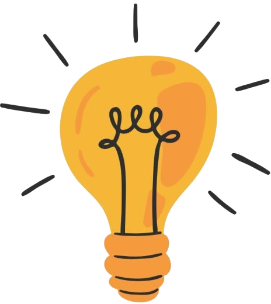
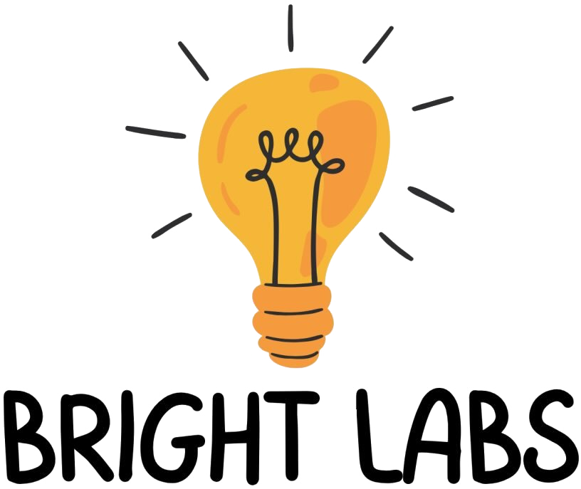

Tutoring
Guidance that meets young learners where they already are, and builds real confidence in the science they are studying right now.

Bright LabsVaughan, Ontario
Bright Labs is a student-led tutoring and education organization dedicated to making science exciting, accessible and inspiring for young learners. We introduce students to intriguing scientific topics, spark curiosity, and foster a love for STEM through tutoring, workshops and unique experiments.

Three ways into the same idea — that science is a thing you get to do.
Guidance that meets young learners where they already are, and builds real confidence in the science they are studying right now.
Sessions built around one intriguing topic, designed to leave students with better questions than the ones they walked in with.
Hands-on experiments that make an idea click at the exact moment a student sees it happen in front of them.
Bright Labs is run by students. That is not a footnote — it is the whole idea. The people leading our sessions learned this material recently enough to remember exactly which part was confusing, and they explain it the way they wish someone had explained it to them.
Curiosity first. The marks follow.
We are a student-led tutoring and education organization based in Vaughan, Ontario, working with young learners who are somewhere on the scale between "science is fine" and "science is the best part of the week" — and moving them up it.
Every session comes back to the same thing: a topic worth being curious about, explained by someone close enough to it to make it land, and then actually tried out rather than only described.
Questions about tutoring, workshops, or bringing Bright Labs to your classroom or group? Send us a note and we will get back to you.
hello@brightlabsvaughan.comServing Vaughan & the surrounding area